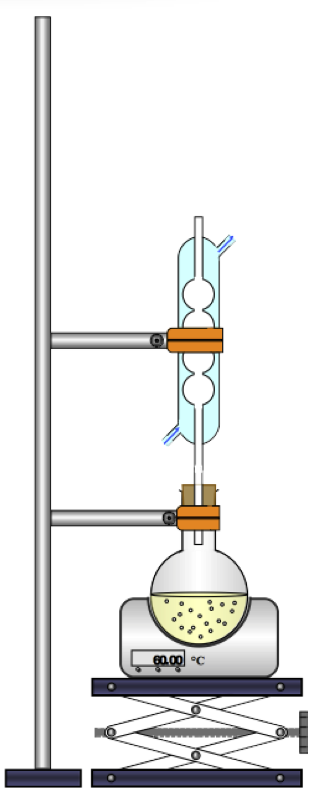
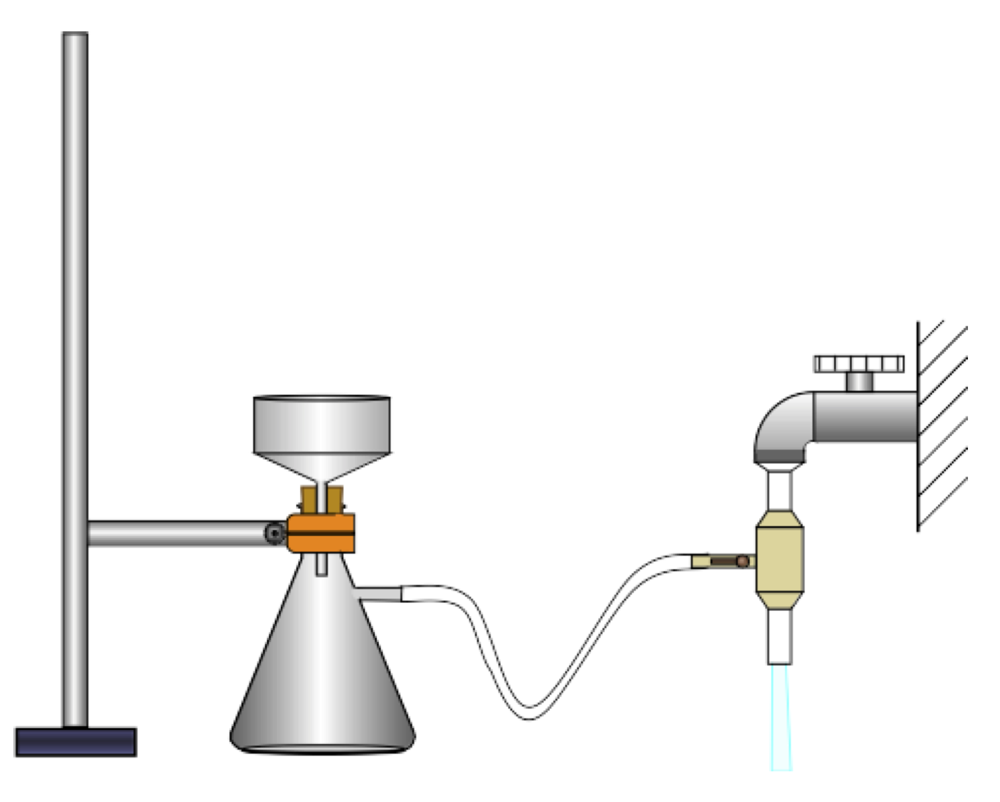

Principe du montage à reflux
Un chauffage à reflux accélère une réaction, puisque la température est un facteur cinétique (plus elle augmente, plus la vitesse de réaction augmente, pour la plupart des réactions).
Le reflux empêche la perte de réactif ou de produit sous forme gazeuse. Dans le vase à réaction (souvent un ballon ou un erlenmeyer), du fait de l’augmentation de la température certaines espèces chimiques se vaporisent. Ces espèces chimiques s’élèvent alors dans le réfrigérant à boules. De l’eau froide s’écoule en permanence sur les parois de ce réfrigérant, à leur contact les gaz refroidissent, se liquéfient sous formes de gouttelettes et finissent par retomber dans le vase à réaction. Pour éviter les pertes de matières, on pourrait tout simplement fermer le vase à réaction, mais dans ce cas on ne travaillerait pas à pression constante et il y aurait un risque de surpression.
On insère souvent dans le vase à réaction quelques grains de pierre ponce afin de réguler l’ébullition, ce qui permet d’éviter la formation de grosses bulles et la projection de mélange réactionnel sur les parois du vase à réaction et du réfrigérant.
Le support élévateur est là par sécurité pour permettre de séparer rapidement le système de chauffage du vase à réaction dans le cas où la réaction s’emballerait. Il faut donc prendre soin de placer le vase à réaction à une hauteur suffisante.
Principe de la filtration sous vide : Méthode d’extraction
La filtration sous vide est une technique de filtration rapide pour séparer un solide d’un liquide.
 L'eau en s'écoulant rapidement dans la trompe à eau diminue localement la pression ; l’air contenu dans le flacon laveur et dans la fiole à vide est alors « aspiré ». Le filtre posé dans le fond de l'entonnoir Büchner sépare le solide du liquide.Le solide, qui reste dans le haut de l’entonnoir Büchner, est alors récupéré plus efficacement : il est beaucoup plus sec que lors d’une filtration simple.
Le joint conique permet d’assurer l’étanchéité du montage, en empêchant le passage de l’air entre l’entonnoir büchner et la fiole à vide. Il maintient le « vide » dans le montage et permet également d’éviter des contraintes physiques (verre contre verre).
Avant de fermer le robinet, il est nécessaire de « casser le vide » (faire entrer le l’air par un endroit quelconque du montage, en enlevant l’entonnoir par exemple), sinon de l’eau remonte dans le montage depuis la trompe à eau. Le flacon laveur empêche ainsi l’eau de remonter dans la fiole à vide.
Dans la filtration par gravité, le liquide s’écoule par la seule action de son poids. La filtration sous pression réduite est beaucoup plus rapide.
Principe de la recristallisation. Méthode de purification
La recristallisation désigne en chimie une méthode de purification qui repose sur la différence de solubilité entre le composé à purifier et ses impuretés dans un solvant donné. La solubilité augmentant généralement avec la température, on dissout habituellement le composé dans le minimum de solvant porté à ébullition.
On choisi le solvant de sorte que dans celui-ci :
- Le produit à purifier y est peu soluble à froid et soluble à chaud.
- Les impuretés y sont solubles à chaud et à froid.
CCM : Chromatographie sur couche mince. Méthode d’identification et de vérification de la pureté d’un produit
La chromatographie sur couche mince (CCM) est une méthode physique de séparation et d’identification des espèces chimiques constituant un mélange. Pour réaliser une CCM, on utilise :
- Un support : c’est une couche de silice déposée sur une plaque. On y dépose le mélange.
- Un éluant : c’est un mélange de solvants placé au fond de la cuve à CCM. Il migre par capillarité et entraîne les espèces chimiques du mélange : c’est l’élution.
Protocole de la CCM
Préparation de la cuve
- Verser l’éluant dans la cuve à chromatographie afin d’obtenir une hauteur de liquide d’environ 5 mm.
- Boucher la cuve afin d’éviter l’évaporation des solvants.
Préparation de la plaque
Attention si la plaque utilisée est une plaque de silice, elle est fragile. Éviter de la toucher avec les doigts.
Tracer au crayon gris, à environ 1,3@nbsp;cm du bord inférieur de la plaque, un trait qui constitue la ligne de dépôt. Placer sur cette ligne des marques, régulièrement espacées, dont le nombre est égal à celui des échantillons à déposer.
Dépôt des échantillons
À l’aide d’une pointe fine, déposer les échantillons sur leurs marques respectives. La tache de dépôt ne doit pas dépasser 3 mm.
Changer de pique pour chaque échantillon.
Élution
- Introduire la plaque verticalement dans la cuve : la ligne de dépôt ne doit pas être au dessous du niveau de solvant (éluant).
- Boucher la cuve.
- Le solvant contenu dans la cuve monte le long de la plaque : c’est l’étape d’élution.
- Attendre que l’éluant ne monte plus, puis retirer la plaque et repérer par un trait la hauteur maximale atteinte par l’éluant (c’est le front de solvant).
- Sécher la plaque (à l’aide d’un sèche-cheveu par exemple).
Révélation du chromatogramme
Dans le cas de composés colorés, le chromatogramme est directement exploitable.
Pour les produits incolores, il est nécessaire de faire apparaitre les taches : c’est l’étape de révélation. On peut pour cela utiliser une lampe à ultraviolet.
Entourer chaque tache au crayon.
Le banc Köfler : détermination d’un point de fusion. Méthode d’identification et de vérification de la pureté d’un produit

Le banc Köfler permet de déterminer le point de fusion d’un solide. Il est constitué d’une surface métallique inoxydable chauffée par un dispositif permettant la décroissance continue de la température sur la longueur du banc (gradient de température).
La substance à analyser est déposée directement sur la surface du banc. Un curseur visualise la séparation liquide/solide du produit. Un index mobile permet de lire la température de fusion correspondante.
Utilisation
Préchauffage
Le banc doit avoir été allumé suffisamment à l’avance pour que sa température en tout point soit stable (dans le temps). Une trentaine de minutes sont généralement nécessaires. Avant toute utilisation, le banc doit être étalonné dans la zone approximative où doit être effectuée la mesure de point de fusion.
Etalonnage
Une très petite quantité d’un composé étalon est déposée sur la partie froide de la table chauffante et déplacée vers sa partie chaude jusqu’à observer sa fusion. Ce composé est choisi parmi une série d’étalons de points de fusion croissants, généralement fournis avec le banc. L’étalon fond à une température précise car il est pur et bien cristallisé. Le curseur de température est alors ajusté pour faire correspondre son index avec la température de l’étalon. Le banc doit être alors essuyé.
Mesure
La mesure de la température de fusion du composé inconnu est ensuite réalisée comme pour l’étalonnage. Le composé est considéré comme impur quand sa température de fusion est inférieure à celle attendue, ou quand sa fusion s’effectue sur une plage de température et non à une température précise.